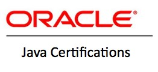
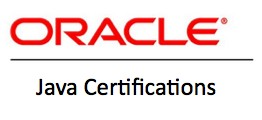

Education
- A.A.S in Network Desing and Administration 2015
- BS in Computer Science Spring 2017
I achieved as A.A.S in Network Design and Administration from Spokane Community College. I'm persuing my Bachelors of Science in Computer Science at Easter Washington University
Certifications
 


While I was at Spokane Community College, I was able to pass the Cisco Certified Netork Associate exam. Thus becoming a CCNA Route/Switch certified. I have also completed the CompTIA A+ certification. I'm currently working on the Oracle Certified Professional Java Programmer certification and the Linux+ certification